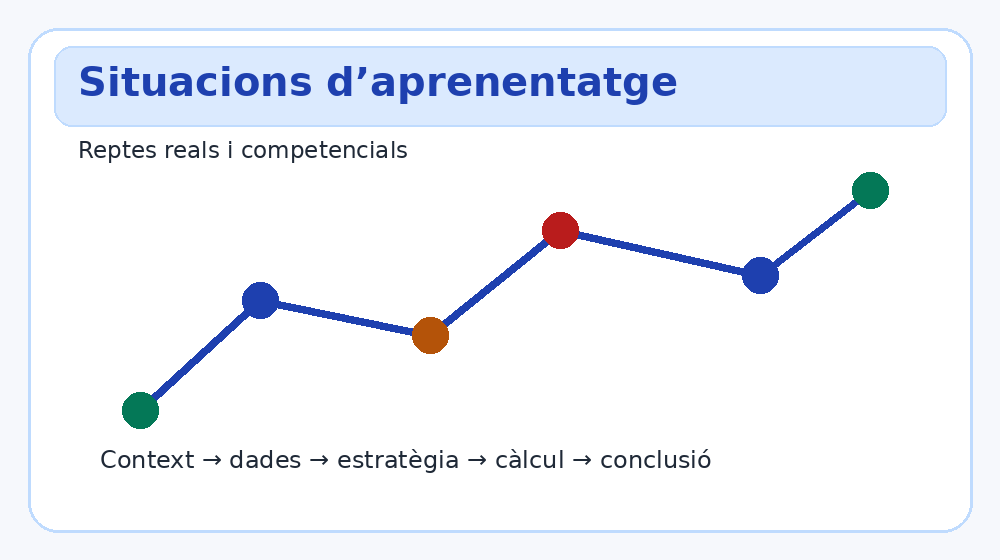
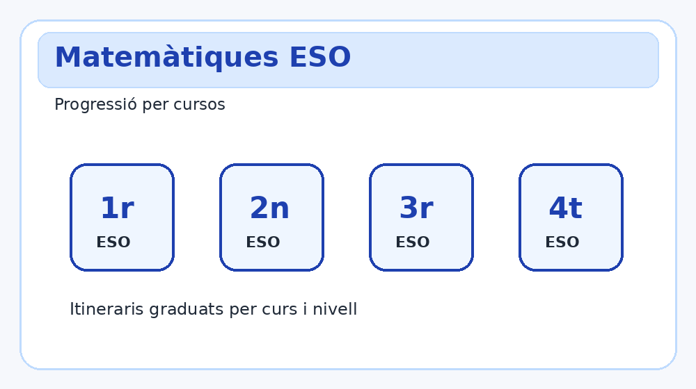
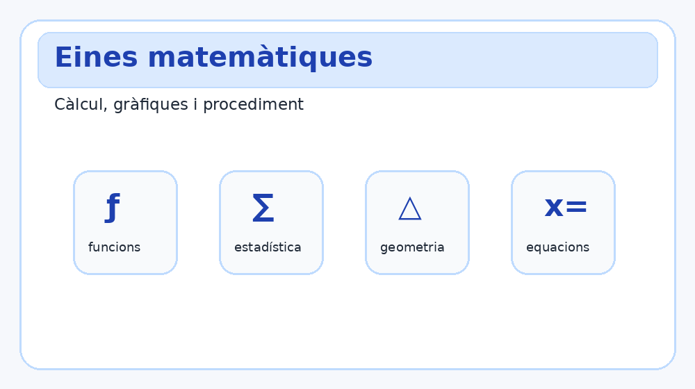
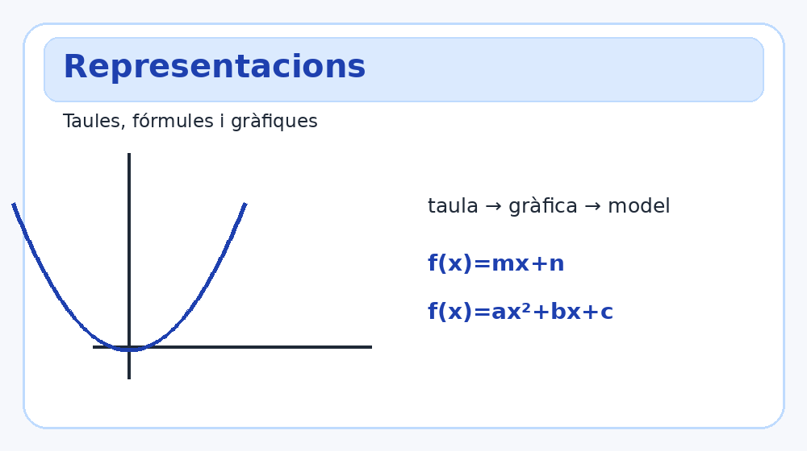
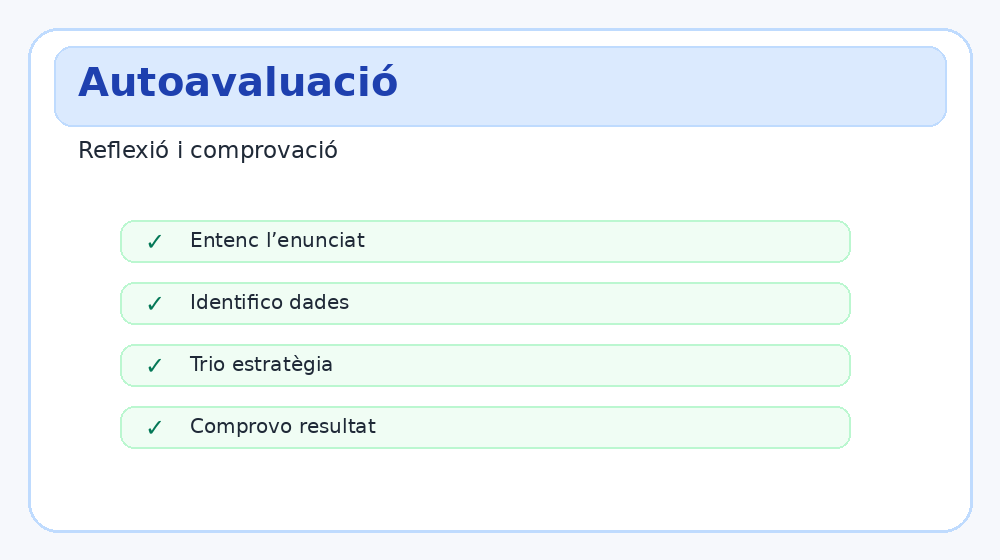

App nova basada en la base estable
Aquesta versió reorganitza la calculadora cap a una app curricular: contextos reals, eines, procediments, representació i comprovació.
PWA educativa
Situacions d’aprenentatge amb càlcul real, eines, fórmules i gràfiques per 1r, 2n, 3r i 4t d’ESO.

Aquesta versió reorganitza la calculadora cap a una app curricular: contextos reals, eines, procediments, representació i comprovació.

Inclou cursos, sentits matemàtics, situacions d’aprenentatge, eines interactives i autoavaluació.

Itineraris
Selecciona un curs per veure sabers clau, eines recomanades i situacions apropiades.
SA mare
Escenaris típics i adaptables per treballar molts supòsits matemàtics.

Motor d’ajuda
Calculadores guiades amb entrades robustes, procediment i comprovació.

Consulta ràpida
Compendi inicial connectat amb l’app de situacions.

Reflexió
Checklist per revisar si el procés matemàtic és complet.
Tria un curs, situació, eina o fórmula per començar.